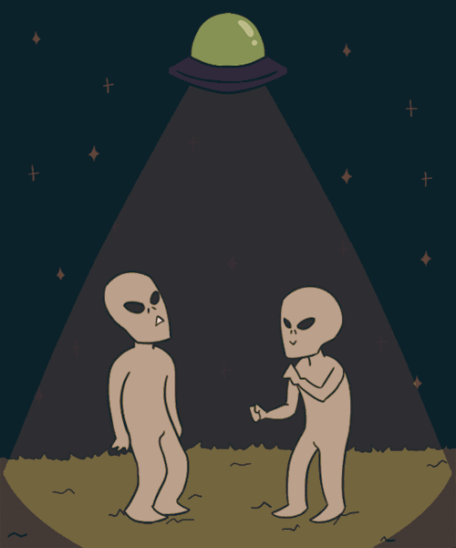
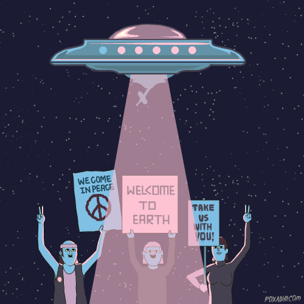

Teorias: por que ainda não encontramos alienígenas?
 
A nossa galáxia possui entre 100 bilhões e 400 bilhões de estrelas.
É bastante mesmo. Mas isso é só na Via Láctea, a nossa galáxia.
No universo todo, existem, no mínimo, outras 175 bilhões de galáxias, cada uma com mais ou menos 100 bilhões de estrelas.
De todas essas estrelas, de todas essas galáxias, estima-se que 500 bilhões de bilhões (olha só o tamanho do número: 500.000.000.000.000.000.000) sejam parecidas com o Sol.
E, dessas, calcula-se que até metade seja orbitada por planetas parecidos com a Terra.
Ou seja: podem existir até 250 bilhões de bilhões (250.000.000.000.000.000.000) de "Terras" espalhadas por aí. Que podem, possivelmente, também abrigar a vida.
Diante de toda essa imensidão, é quase inconcebível imaginar que nós estamos absolutamente sozinhos no Universo, certo? Afinal, se temos centros especializados em procurar vida fora da Terra, já fomos à Lua, mandamos sondas para Marte, Plutão e diversos outros lugares, por que raios ainda não encontramos ninguém? Por que ninguém tentou fazer contato?